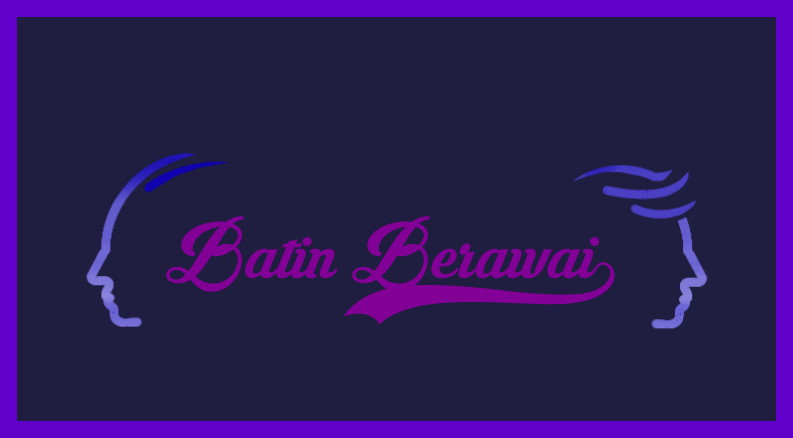
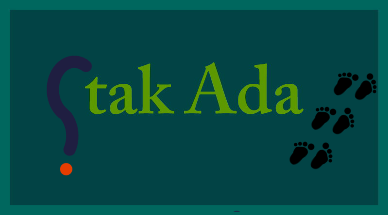

ATAP KATA.
KATEGORI

Batin Berawai
Deruan suara begitu lantang
Tatkala primadona desa datang
Riuh ricuh, semesta ikut menyambut
Menghiasi senyum yang tak surut
Malam itu
Kau akhirnya tak dapat menjadi tanda petik diantara dingin raut wajahmu
Pernah kala itu kau sebutir benci yang menyikapi air mata dengan gelapmu
Memang
Minggu akan menjadi harinya sendiri.
Masih selalu tersisa luka yang semakin lebar

Tak ada
Jika nya sudah nanti kau tak ada
Maka yang tersisa tinggal kata sirna
Maka tak ada alasan untuk menjadi lebih dari yang pernah ada.